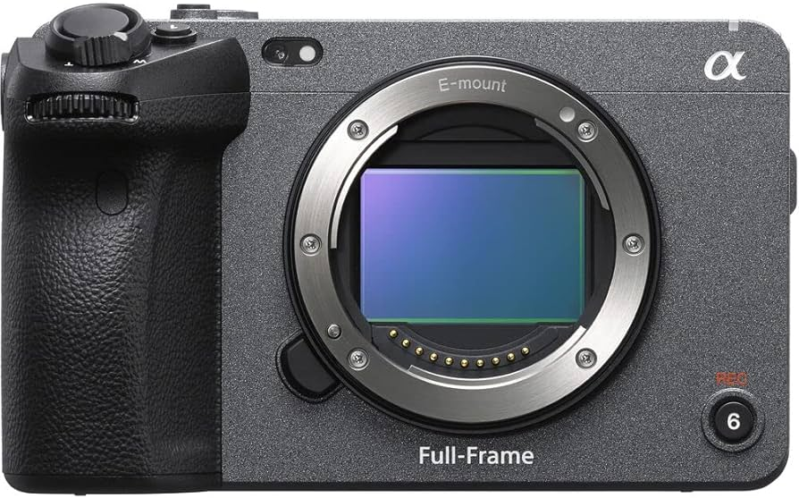
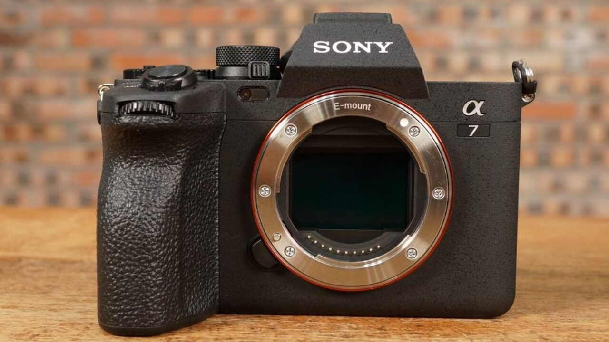
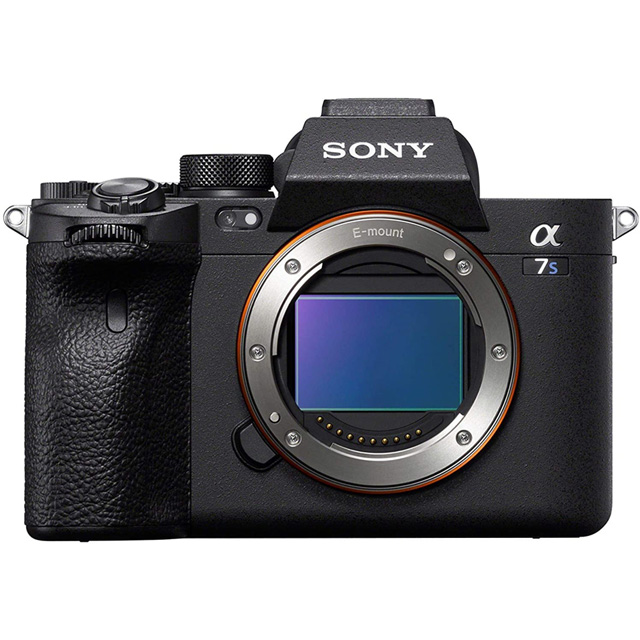
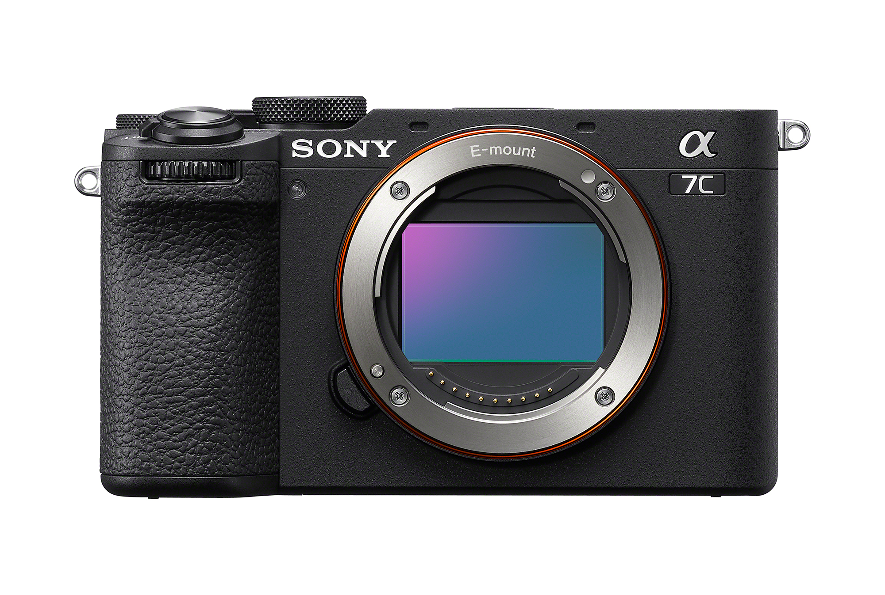
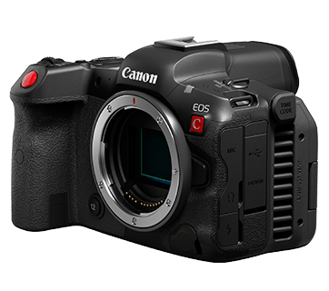
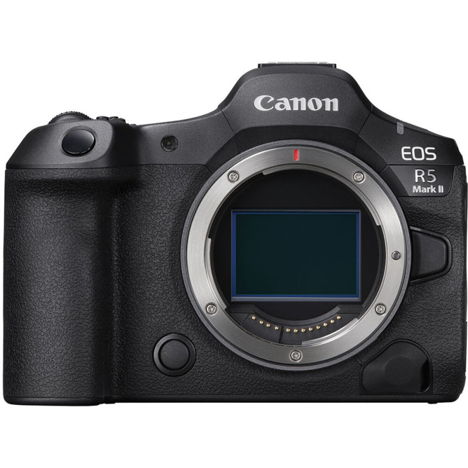

Sony 的 Cinema Line FX3 數位相機能夠忠實呈現創作者的願景與熱忱。 不只提供驚人的電影效果，也具備可靠性能，且操作流暢，能滿足當今創作社群的需求。體積輕盈小巧，方便攜帶與操作。
Sony A74是A系列首次在影片與靜態影像拍攝支援鳥眼偵測，相機驚人的速度與精準度可讓您自動追蹤特定禽鳥，不會受到快速、出人意料的動作影響。 在錄製高達30p的4K影片時，還可進行全片幅7K超採樣，進而獲得高解析度、極致細膩的4K畫質。


α7S III 的標準ISO 範圍可達驚人的80-102,400，拍攝靜態影像時更可擴充到40-409,600，為您開啟發揮創意的無窮機會。 與前一代α7S II 相比，新開發的感光元件與影像處理演算法能帶來更清晰的影像與更自然的質感，即使在接近完全黑暗的情境下拍攝，性能也不受影響
α7C 體積小巧全片幅功能 α7C1 結合FE 28-60 mm F4-5.6 鏡頭，能以全球最小最輕的2相機和鏡頭系統，達成不容妥協的全片幅畫質。 機身輕巧但卻符合對於影像品質、自動對焦及速度的高度期待。 不論您身在何處，α7C 都能隨時提升您的創意力，是一部各方面表現俱佳的相機


EOS R5 C 結合了EOS R5 高解析度相片拍攝功能及Cinema EOS 高效的影片拍攝功能，搭載4500 萬像素全片幅CMOS 影像感測器、8K 60P 無限時影片錄影，將卓越解析度和影片效能集於一身，加上採用RF 接環除了可使用一系列高畫質的RF 鏡頭
EOS R5 Mark II 配備全新開發的 Accelerated Capture 加速捕捉系統及深度學習技術，帶來各種革命性的新功能。EOS R5 Mark II的 4,500萬像素全片幅背照堆疊式 CMOS影像感測器，支援電子快門每秒 30張連續拍攝及機內記錄 8K DCI 60p Light RAW 及 4K 120p MP4。新一代的雙像素智慧自動對焦 (Dual Pixel Intelligent AF)系統，新加入動作優先自動對焦及註冊人物優先等先進功能，再配合眼球控制自動對焦，為自動對焦追蹤帶來革命性效能。
